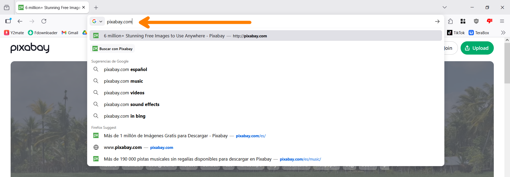
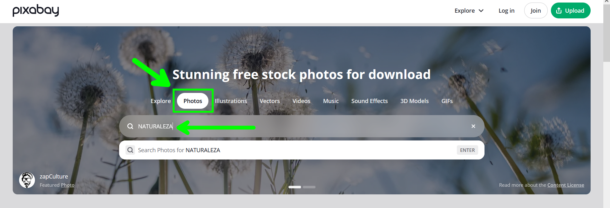
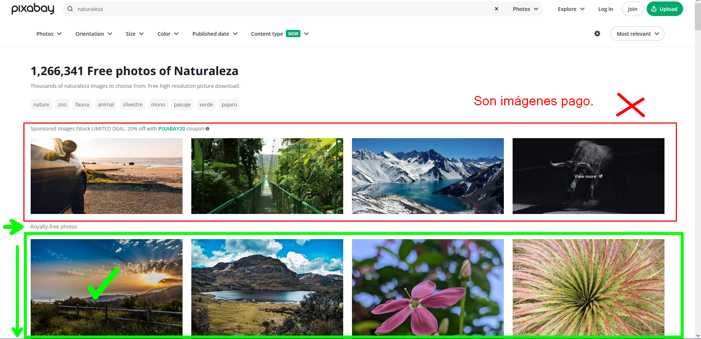
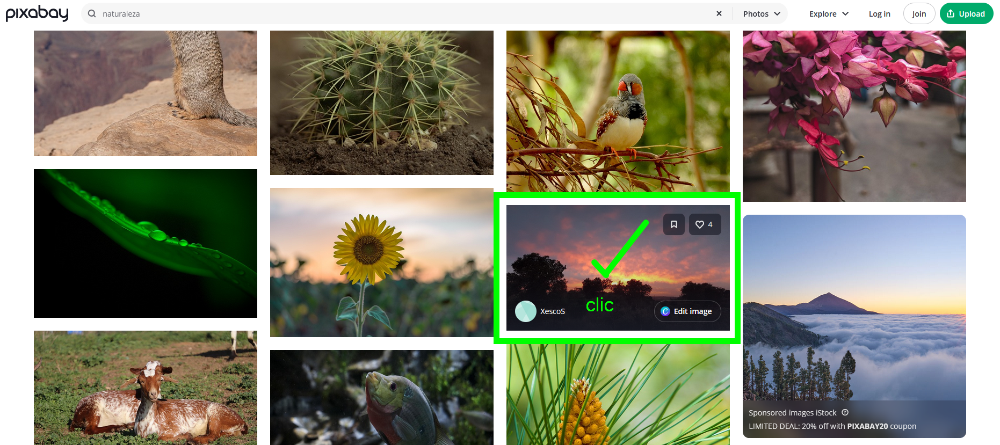
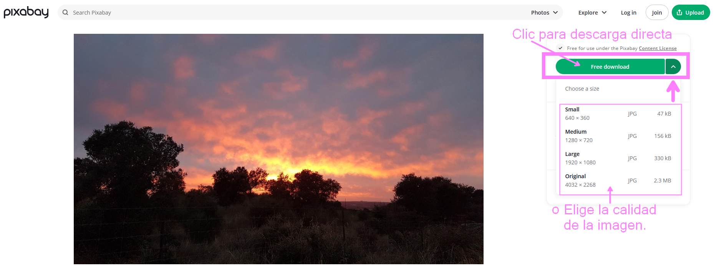
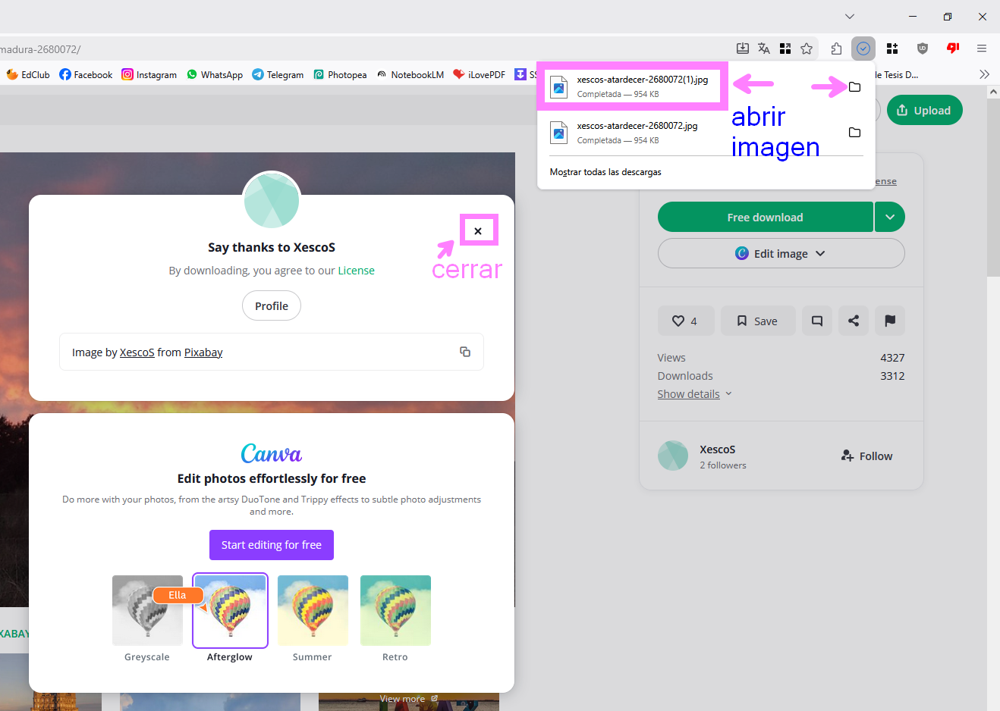
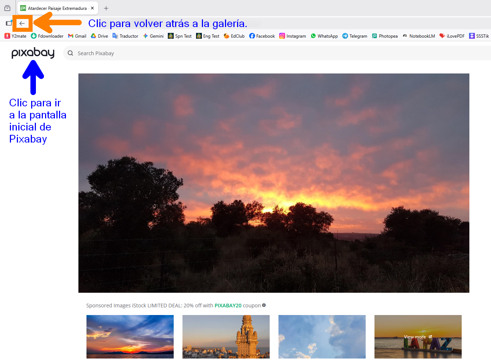
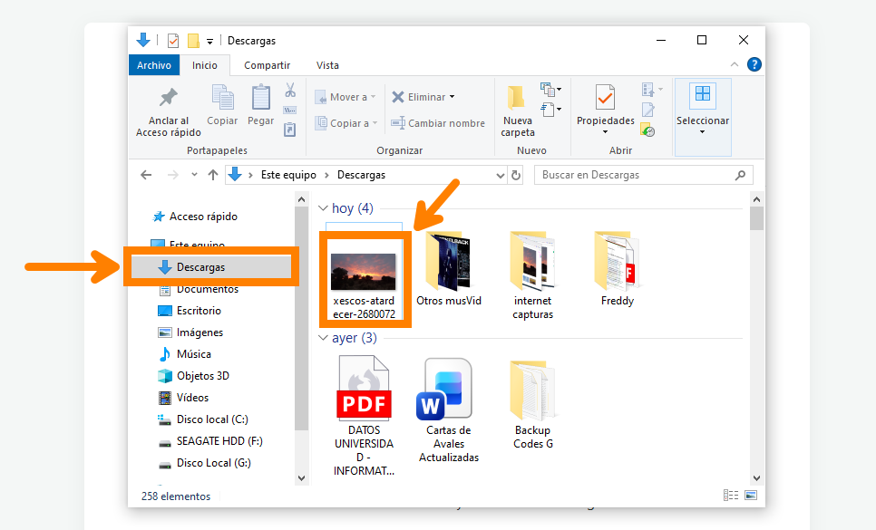

Descargar Imágenes gratuitas y de alta calidad con Pixabay
Pixabay es un sitio web que ofrece imágenes, videos y música de alta calidad de forma gratuita y libre de derechos. A continuación, se muestra cómo descargar imágenes de Pixabay.
Paso a Paso:
Antes que nada abre tu navegador de preferencia (Google Chrome, Mozilla Firefox, Microsoft Edge, etc.) y sigue los siguientes pasos:
-
Acceder al Sitio: Ingresa a
www.pixabay.comdesde tu navegador web.
-
Buscar Contenido: Usa la barra de búsqueda en el centro de la página. Puedes escribir palabras clave relacionadas con lo que buscas (ej. "tecnología", "naturaleza"). Luego presiona enter o el botón de buscar.

-
Elegir Imágenes Gratis: Asegúrate de seleccionar las imágenes que son gratuitas y libres de derechos, evitando la sección de imágenes patrocinadas.

-
Seleccionar una Imagen: Haz clic sobre la imagen que te guste para abrirla en una vista más detallada.

-
Descargar: Haz clic en el botón Descargar, elige la calidad y/o resolución deseada y confirma la descarga.

-
Abrir Imagen Descargada: Una vez finalizada la descarga, puedes abrir la imagen directamente desde la parte superior derecha, en la sección de descargas de tu navegador para visualizarla.

-
Volver Atrás o Página Principal: Si deseas buscar más imágenes, puedes volver atrás en tu navegador o hacer clic en el logo para ir a la página principal.

-
Ver en Carpeta de Descargas: También puedes dirigirte a un explorador de archivos y abrir la carpeta de Descargas de tu computadora para ver, copiar o mover la imagen que acabas de guardar.

Nota:
Para descargar imágenes en su resolución máxima, es posible que el sitio te pida registrarte o pasar un captcha de seguridad.